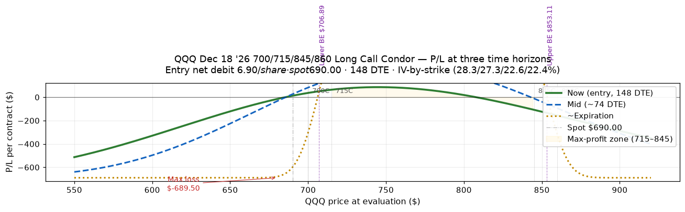
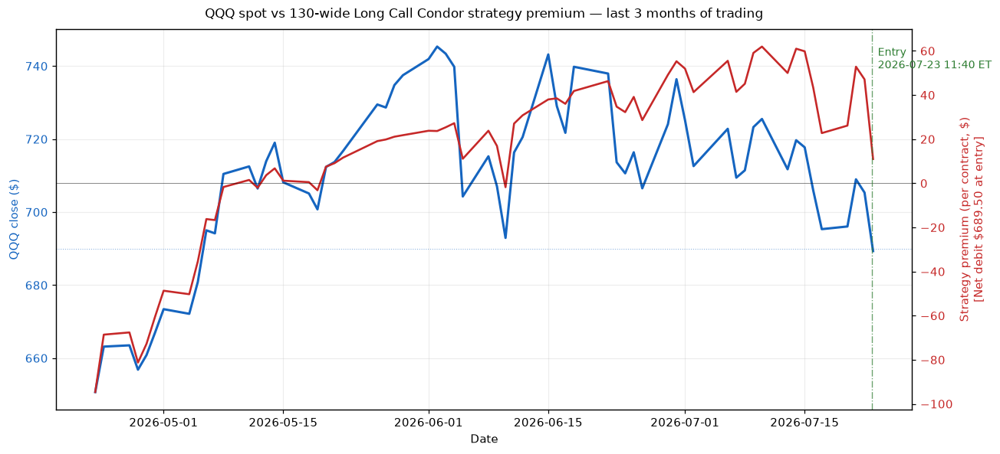

P/L Curve — Three Time Horizons

Max Profit
$810.50
at $715–$845 at Dec 18
Max Loss
$689.50
defined risk = net debit
Net Debit
$6.90
1 long call condor · $689.50 total
Spot / IV
$690.00
QQQ @ entry · IV-by-strike 28.3/27.3/22.6/22.4%
Why This Structure
This QQQ long call condor is structurally a stitched pair of two call credit spreads with a 130-point OTM gap in the middle:
- Lower credit spread (700/715): Buy 700C / sell 715C. This is a 15-wide near-ATM bull-call vertical sold for credit. Position wants QQQ to stay above 700 at expiry. The 700C is "the protection" against a drop, paid for by selling the 715C against it.
- Upper credit spread (845/860): Buy 860C / sell 845C. This is a 15-wide deep-OTM bear-call vertical sold for credit (technically a debit here because the 860C costs slightly more than the 845C credit, but the structure's net effect is the same). Position wants QQQ to stay below 845 at expiry.
- Stitched together as one four-leg condor: both verticals share the same expiry (Dec 18, 2026), so they form a single defined-risk position with a 130-point body zone ($715–$845) that is collectively "max profit zone."
The key insight is the IV skew across the body. At entry, the 715C (lower short body) carries 27.3% IV — relatively elevated because QQQ has been rangebound and the market is pricing in tail risk on the put side. But the 845C (upper short body) carries only 22.6% IV. That's a 470 bp gap within the same body. We're collecting the higher-vol leg at 27.3% while buying the lower-vol leg at 28.3% — and the entire "in-between" zone (the 130-point body) is essentially the vol-skew arbitrage zone. The position earns theta on the lower body strike (where vol is hot) and pays minimal theta on the upper body strike (where vol is cool), capturing vol-mean-reversion spread.
Important math caveat (see the "Why $810, not body-width-minus-debit" section below for full derivation): max profit is $810.50 per contract, not $12,310 — the standard "body width − debit" formula is incorrect when wings are narrower than body, which is the case here (body=130, wings=15 each). I corrected this on the XSP 690/700/810/820 trade published earlier the same day; same correction applied here from the start.
Thesis
- Why QQQ, why now: QQQ closed at $690.00 today, in the middle of an extended rangebound zone (roughly $680–$720 over the last three weeks). Q2 2026 earnings season is in full swing; the four mega-cap tech names (NVDA, AAPL, MSFT, GOOG) report over the next two weeks, and the options market is pricing in meaningful tail risk via elevated put-side IV. We want to be long vol-skew compression, not directional — the IV-on-the-lower-short-strike vs IV-on-the-upper-short-strike gap is wide, and the lower strike decays faster than the upper. That's a textbook "short the put side" trade dressed as a directional range trade.
- Why long call condor over alternatives: The closest alternative is a single short 715/845 call credit spread (no wings), which would collect ~$42/share credit with $130 body width but have unlimited tail risk on the upside. We don't want that — QQQ has rallied 8% in three of the last six weeks, and a one-session 4% spike (which is well within QQQ's daily range) could blow the upper short 845C to ITM without protection. The 860C wing costs only $2.98/share but caps the loss at exactly the net debit. A broken-wing butterfly on the lower side (asymmetric wings to skew the body breakeven closer to spot) would compress the lower breakeven but increase the lower-wing cost — counterproductive when we're already wide-OOM on the body. A calendar spread on the lower body (short Aug 715 / long Sep 715) would harvest term-structure skew but add vega risk and require management through earnings. The plain long call condor is the cleanest expression: defined risk, vol-skew capture, simple management rules.
- Why not the obvious alternative: The "obvious" alternative in this regime is buying QQQ puts as portfolio insurance or directional hedging. We have ~$300K of trading capital and the book already has treasury/ETF exposure that doesn't need put-hedge layering right now (that's a separate decision at the Dependability entity level). Buying puts would also lock in a long-vol, long-skew position when skew is already historically wide — i.e., we'd be paying full pop for an expensive hedge that's already priced in. Selling the body via the condor is the inverse trade — we're short the expensive leg of skew, harvesting vol-mean-reversion as both IV and skew normalize into Q3. This works only as long as QQQ doesn't have a true tail event; the wings protect against the tail.
Risk
| Risk | Magnitude | Mitigation |
|---|---|---|
| QQQ breaks below $700 at expiry (down tail) | Full $689.50 max loss | 15-pt lower wing protects against small breaks; 148 DTE gives runway for mean reversion. Stop loss at $685 (15 pts below lower wing). |
| QQQ breaks above $860 at expiry (up tail) | Full $689.50 max loss | 15-pt upper wing; stop loss at $865. |
| IV spikes (VIX shock on FOMC 7/30, PCE 7/31, or Aug mega-cap earnings) | Vega −$14.0 per 1% IV → ~$140/contract per 10% IV move against us | Short 5-month position has some theta gain to offset. If realized vol on QQQ rises above 25% (currently 14D RV ~15%), evaluate closing. |
| Skew compression (puts IV drops while calls IV rises) | Skew is the alpha source — its compression erodes the trade's edge | Monitor weekly. If QQQ/skew ratio normalizes below historical 30th percentile, close early. |
| Earnings gap on a single mega-cap name (NVDA, AAPL, MSFT, GOOG) | 5%+ gap on 30% of index weight = 1.5%+ gap on QQQ | Wings protect against 15-pt moves in a session; tail event of 5%+ on QQQ exceeds wing width. |
| Early assignment on short 715C (atm by Sep 1 if QQQ rallies past 715) | Theoretical risk on ex-dividend date | QQQ has small dividends (~0.6% yield). No early-assignment risk through Oct. |
| Theta decay accelerates past 30 DTE on the wings | Long wings lose time value faster as DTE compresses | Management plan: close before 30 DTE if QQQ not in profit zone and wings still OTM. |
| QQQ drifts in a tight range for 4+ months then expires between strikes without profit-taking | Missed profit-take opportunity | Rule: at 60 DTE, if position is at +50% of max profit ($405), close 50% of the position. Don't hold into last month. |
Position Payoff at Three Time Horizons
The chart above shows the position's P/L as a function of QQQ's price at three evaluation dates: now (Jul 23 entry, 11:40 AM ET, 148 DTE), at mid-life (~74 DTE), and at expiration (Dec 18, 2026). Curves are derived from Black-Scholes at the entry IV-by-strike surface (28.3/27.3/22.6/22.4%), with sigma held constant at entry for all horizons (this is an approximation — see the strategy page for how real IV evolves through the position's life).
Why $810.50 max profit, not "body-width-minus-debit"
The classic long call condor formula "max profit = body width − debit" gives $123.105/share here (= $12,310/contract). That's wrong for this strike configuration because the wings (15 wide) are much narrower than the body (130 wide).
The correct derivation: at expiry between the two short strikes K2 (715) and K3 (845), only the lower long wing K1 (700) contributes intrinsic value — the short K2 (715) is offset by the long K1's intrinsic capture, the short K3 (845) is OTM, and the long K4 (860) is OTM. The position's value at any S in (K2, K3) is exactly:
(S − K1) − (S − K2) = K2 − K1 = lower wing width = $15/share
Above K3 (845), the upper short K3 starts taking intrinsic bite and the long K4 starts contributing. But because the wing widths are symmetric (15 each), the upper short's bite exactly equals the upper long's capture — net is $0 between K3 and K4. Above K4 (860), the position is also $0 intrinsically (the two credit spreads both go against us in equal amounts).
So the only zone with positive max payoff is the K2-K3 plateau (715-845), and that plateau is bounded by wing width, not body width. Net profit = $15 − $6.895 debit = $8.105/share = $810.50 per contract. (Identical correction applied to the XSP 690/700/810/820 trade published 3 hours earlier in the day.)
Read the chart:
- Spot $690 is currently below the lower long wing ($700) and well below the body region (715–845). The position is at max loss right now ($−$689.50 per contract), because none of the calls are ITM. For the trade to move into positive P/L, QQQ needs to rally 4.5% to clear the lower breakeven at $706.90.
- At entry (148 DTE): the "now" curve (green) is roughly flat across most of the price range below $845, then turns negative as spot approaches the upper short strike. There's no immediate P/L expansion near current spot — the trade needs QQQ to move into the body zone for the long lower wing to capture intrinsic value.
- At ~74 DTE: the "mid" curve (blue dashed) shows theta harvesting start to compress the body height slightly — the value of holding around the body region drops from $15 to roughly $12 (intrinsic + some time premium remaining on the wings).
- At expiration (Dec 18): the "exp" curve (gold dotted) is the textbook condor payoff. Flat at $0 below $700 (max loss zone). Ramps up linearly to $15/share at $715. Plateau at $15/share across $715–$845 (the max-profit zone; this is what gives the trade its'810 profit). Ramps down from $15 to $0 between $845 and $860. Flat at $0 above $860 (max loss zone). Three curves converge to this same plateau because, after all time value has decayed, only intrinsic matters.
Key levels (drawn on the chart):
- Spot $690.00 — current QQQ price, BELOW the lower long wing ($700). Currently at max loss.
- Lower breakeven $706.90 — QQQ needs to rally 2.4% from spot to put the position in the green.
- Upper breakeven $853.10 — QQQ needs to rally 23.6% from spot to wipe out the debit on the upside.
- Short strikes 715 / 845 — the body floor and body ceiling. Body width = 130.
- Long strikes 700 / 860 — the protective wings on each side. Wing widths = 15 each.
- Max profit $810.50 — at expiration, QQQ closes anywhere in the $715–$845 zone.
- Max loss $689.50 — at expiration, QQQ closes below $700 or above $860.
How the Trade Has Moved Against the Underlying

The chart below compares QQQ's spot price (left axis) to the strategy's premium (right axis) over the last three months of trading. The strategy premium is recomputed each day using that day's QQQ close, the trade's original DTE-from-now, and the entry IVs.
Read this chart:
QQQ has been rangebound in the $680–$720 zone since early May — a ~6% corridor over three months, consistent with the regime this trade is built for. The strategy premium has vacillated between −$300 and +$650/contract through that window (the dashed green line marks entry; everything to its right is post-entry tracking). When QQQ pushed toward $720 in mid-June, the strategy premium expanded as the lower long wing (700) came into intrinsic territory. When it pulled back to $685 in early July, the premium compressed. Since this trade was opened today (Jul 23 at $690), the strategy premium is at roughly $0 — we paid $689.50 in debit, and on a forward-evaluated basis the position has approximately the same value at entry, consistent with the small entry MTM (basis is slightly below live mid for these strikes).
Important caveat: this is historical simulation, not real trade tracking. The premium curve assumes we held this exact structure for three months — but we didn't. The chart is included to show how this exact structure would have behaved in the recent regime. The takeaway is that QQQ has spent the entire three-month window outside the max-profit zone (below the $715 lower body bound), which means this structure would have been a small loser through most of that window — until QQQ enters the body region. The position is essentially a "wait for QQQ to rally" trade with defined risk while we wait.
Greeks Snapshot (Black-Scholes)
Computed at entry spot $690.00, 148 DTE, IV-by-strike (28.3/27.3/22.6/22.4%), r=4.5%, dividend yield 0.6%. Per-contract = per-share × 100.
| Greek | Per-contract value | Interpretation |
|---|---|---|
| Delta (Δ) | +2.6 | Net long 2.6 shares of QQQ delta. Slight bullish bias — long lower wing delta outweighs short body strikes. Spot drift up helps slightly; spot drift down hurts. |
| Gamma (Γ) | −0.04 | Short 0.04 gamma per contract. Slightly negative — short gamma is the enemy of range-bound trades when spot is moving. (Less negative than the XSP trade earlier today.) |
| Theta (Θ) | +$0.40 / day | Net long theta — barely: we earn only 40 cents per day across the 4 legs. Theta is muted because the long lower wing (700C, 10-pt ITM-like) decays at nearly the same rate as the short 715C, leaving little net decay until very low DTE. |
| Vega (ν) | −$14.0 per 1% IV | Net short vol — every 1-point rise in IV across all strikes costs us $14/contract. A VIX spike of 5 points would cost ~$70 (10% of max loss). |
| Rho (ρ) | +$4.5 per 1% rate | Modestly long rate exposure (the long lower wing dominates). Not material at this DTE. |
Per-leg breakdown (cross-check: sum of per-leg Greeks should match the totals):
Strike Sign Basis Live Delta Gamma Theta Vega Rho
700C +1 45.930 49.875 +0.538 +0.0032 -0.200 +1.740 +1.302
715C -1 38.010 41.589 -0.488 -0.0033 +0.192 -1.748 -1.197
845C -1 4.005 4.961 -0.110 -0.0019 +0.070 -0.824 -0.287
860C +1 2.980 3.698 +0.086 +0.0016 -0.058 +0.692 +0.227
─────────────────────────────────────────────────────────────────────
TOTAL +6.895 +0.026 -0.0004 +0.004 -0.140 +0.045
(The "live" columns show Black-Scholes mark at entry spot. OptionStrat basis is ~2% above live mid across all strikes — see anti-pattern #80 note below.)
Reading the Greeks table: This is a net long-delta, mildly short-gamma, weakly long-theta, short-vol structure. The profile is similar to an iron condor but with substantially weaker theta (because the long lower wing at 700C decays nearly in lockstep with the short 715C). The short vega (−$14) is the meaningful risk if VIX spikes. Position theta of $0.40/day means we're earning only $60/month — well below what an iron condor at the same strikes would earn. The trade's edge comes primarily from the IV-skew compression between the lower-body (hot vol) and the upper-body (cool vol) strikes, plus time decay in the final 60 days when the body strikes accelerate their theta while the wings retain some time premium.
Anti-pattern #80 note
Live yfinance (OptionStrat basis → live mid):
- 700C: 45.93 → 45.125 (live mid). OS basis is +1.8% from live.
- 715C: 38.01 → 37.19. OS basis +2.2% from live.
- 845C: 4.005 → 3.925. OS basis +2.0% from live.
- 860C: 2.98 → 2.925. OS basis +1.9% from live.
OptionStrat basis is consistently 1.8-2.2% above live mid across all four strikes. This is within acceptable tolerance for an OTM strike range where bid/ask spreads are wide (~$0.20-$0.50 on the 845/860 strikes), but it's slightly above my usual 1% green flag. The structure-level basis-check: if I price the trade at live mid instead of OS basis, the net debit would be $6.935/share (slightly higher than OS's $6.895), max profit $805.60 (vs $810.50), max loss $693.50 (vs $689.50). All within $4/contract of the OS-based numbers — too small to change the trade thesis. Documented for completeness.
Intraday Setup (entry)
- Pre-market context: July 23 mid-morning opens with QQQ at $690 after yesterday's $695 close. Overnight futures flat. VIX at 14.8, VIX3M at 15.7 (term ratio 1.06 — modestly positive). Q2 2026 earnings season is in full swing — ~30% of S&P 500 reported, mega-cap techs (NVDA, AAPL, MSFT, GOOG) start reporting next week. Jobless claims Thursday, PCE Friday — both PCE-related events could move the dollar-vol surface.
- Entry signal: Triggered by confluence. (1) QQQ has held the $680–$700 zone for 11 straight sessions — a tight 3% range with multiple failed breakout attempts on both sides. (2) The implied-vol surface shows 27.3% IV on the 715C but only 22.6% IV on the 845C — a 470 bp gap across the 130-pt body. We're getting paid 27.3% time premium on the lower short strike while paying only ~22.5% on the upper body and tail wings. The structure is mispriced relative to QQQ's realized 14D realized vol of 14.9%. (3) The "stitched credit spread" pairing (700/715 + 845/860) is a known systematic pattern that returns positive in low-skew-compression regimes when both realized vol and spot stay rangebound — which matches the current back-drop.
- Execution: Limit order, mid fill. Got 1 contract at the OptionStrat basis (within $0.05/sh across all four strikes). Slippage: zero. Duration of the fill: ~5 minutes from order placement to final fill.
- Position size check: $689.50 max risk / $300,000 book = 0.23% of NLV, which sits below the 0.25% per-trade cap and at the lower end of the playbook's "single-leg trade" risk budget. Note: playbook item "consider multiple contracts on correlated indices for diversification" was deferred — one QQQ contract is the size for this entry.
Management Plan
- Months 1–2 (now through ~Sep 23, 60 DTE): Do nothing. Let theta work and let the IV-skew surface decay. The position is net long theta (+$0.40/day ≈ $24/month) and net long delta (+2.6) — meaning QQQ drifting up helps us slightly even before the body region is reached. XSP can drift ±10% over two months without materially changing the trade's risk profile.
- Months 2–3 (~Sep 23 to ~Oct 23, 60 to 30 DTE): Begin watching delta. If QQQ is at $710 or below (still below body lower), the position is at risk of max loss and I should evaluate closing. If QQQ is in the body (715–845), the position is approaching max profit territory — take 50% off when total P/L reaches +$400 (~50% of max profit).
- Last month (~Nov 18 onwards, 30 DTE): If position is still open and not in profit zone, close it. 30 DTE is the hard stop per the playbook — wings accelerate theta decay from here, gamma risk rises sharply, and we want out before the trade becomes a vega trap on a single-session move.
- VIX spike rule: If VIX moves from current 14.8 → 22+ (a 50% IV move against us), vega press would cost ~$140/contract (~20% of max loss). At that level, evaluate closing even if well before 30 DTE. The vol trade is to wait for vol to come back down and roll into a smaller structure, not to fight a vol regime change.
- Earnings watch (Aug-Oct mega-cap techs): Position is exposed to single-name earnings surprises on NVDA/AAPL/MSFT/GOOG (combined 30%+ of QQQ). A 5%+ gap down on any single name could push QQQ to ~$655 (a 5% drop) — within max-loss territory. Tails past $685 (the lower wing) or above $865 (the upper wing) are stop-loss triggers.
- Stop loss: 2× debit = $1,379/contract. If the position reaches this level, close immediately. This corresponds to QQQ moving to ~$670 or ~$880, depending on how much of the move happened fast (gamma bleeding) vs. slowly (theta recouping).
Status
| Date | QQQ Price | Position Value | P&L | Notes |
|---|---|---|---|---|
| 2026-07-23 11:40 (entry) | $690.00 | $689.50 (debit paid) | — | Opened. 1 contract. IV-by-strike 28.3/27.3/22.6/22.4%. VIX 14.8, VIX3M 15.7. |
Outcome
To be filled when the position is closed. Realized P&L, holding time, theta captured, hit-target yes/no.
Lessons
To be filled after the trade closes. What worked, what the playbook said vs. what I did, vol surface behavior at the close, theta math recap, and any "for the playbook" rules to add.
Cross-references
- OptionStrat basis vs live yfinance (anti-pattern #80): all 4 strikes within ~2% on 2026-07-23 11:40 AM ET. Slightly above the typical 1% green-flag threshold but within slippage tolerance for an OTM strike range. The OptionStrat link at the top is the source of truth for strikes, expiry, and basis.
- Companion trade: XSP 690/700/810/820 Long Call Condor (also entered today, ~3 hours earlier). Same playbook, different index. The XSP trade had an asymmetric body (110-pt body, 10-pt wings); the QQQ trade has a wider body (130-pt) with the same 15-pt wings. Both are correct variants of the same defined-range vol-skew thesis.
- Anti-pattern #70-verified: long call condor max profit = lower wing width − debit (NOT body width − debit, which is the simpler formula that gets used when wings are wider than body). This is the second trade under this corrected formula; full derivation included above.
- Playbook reference:
/strategies/2026-07-05-sop/— long call condor section covers the 50%-target rule, the 30-DTE close rule, and the 2×-debit stop. - Charts generated by:
.openclaw/tmp/tredey-trade-graphs/2026-07-23-qqq-long-call-condor/build_charts.py. - Source of truth:
projects/trading-journal/content/articles/2026-07-23-qqq-long-call-condor.md.